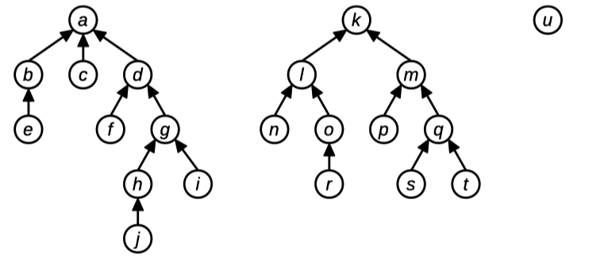
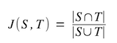

This week in section you'll be practicing with collection types and reference parameters. These problems will get you some good practice with topics that you'll see in assignment 2 and beyond. There's a starter package linked below. Have fun!
Problem One: Iteration Station
Topics: Vectors, sets, stacks, range-based for loops, for loops, parameter passing
Below are a bunch of functions that attempt to iterate over a container of some type. For each function, determine whether
- the function works correctly
- the function compiles, but doesn't correctly iterate over the elements, or
- the function won't even compile
In each case make sure you can explain why!
void iterateVec1(const Vector<int>& vals) {
for (int i = 0; i < vals.size(); i++) {
cout << vals[i] << endl;
}
}
void iterateVec2(const Vector<int>& vals) {
for (int i : vals) {
cout << vals[i] << endl;
}
}
void iterateVec3(const Vector<int>& vals) {
for (int i : vals) {
cout << i << endl;
}
}
void iterateSet1(const Set<int>& vals) {
for (int i = 0; i < vals.size(); i++) {
cout << vals[i] << endl;
}
}
void iterateSet2(const Set<int>& vals) {
for (int i : vals) {
cout << i << endl;
}
}
void iterateStack1(const Stack<int>& s) {
for (int i = 0; i < s.size(); i++) {
cout << s.pop() << endl;
}
}
void iterateStack2(Stack<int> s) {
for (int i = 0; i < s.size(); i++) {
cout << s.pop() << endl;
}
}
void iterateStack3(Stack<int> s) {
while(!s.isEmpty()) {
cout << s.pop() << endl;
}
}
iterateVec1: This one works just fine!iterateVec2: This code will likely crash at runtime. The variableirefers to a value in theVector, not an index in theVector, so using it as an index will jump to a spot that wasn't designed to be an index.iterateVec3: This code works just fine!iterateSet1: This code won’t compile. You can’t get individual elements of aSetby index using the square bracket operator.iterateSet2: This code works just fine!iterateStack1: This code won’t compile. TheStackhere is passed in byconstreference, which means that it can’t be modified. However, calling.pop()modifies the stack.iterateStack2: This one fails for a subtle reason. Each iteration of the loop decreasess.size()by one. Coupled with the fact thatiis increasing by one at each point, this will only look at the first half of the stack.iterateStack3: This code works just fine! It does make a copy of theStack, but that’s okay given that the only way to see everything in a stack is to destructively modify it.
Problem Two: Debugging Deduplicating
Topics: Vectors, strings, debugging
Consider the following incorrect C++ function, which accepts as input a Vector<string> and tries to modify it by removing adjacent duplicate elements:
void deduplicate(Vector<string> vec) {
for (int i = 0; i < vec.size(); i++) {
if (vec[i] == vec[i + 1]) {
vec.remove(i);
}
}
}
The intent behind this function is that we could do something like this:
Vector<string> hiddenFigures = {
"Katherine Johnson",
"Katherine Johnson",
"Katherine Johnson",
"Mary Jackson",
"Dorothy Vaughan",
"Dorothy Vaughan"
};
deduplicate(hiddenFigures);
// hiddenFigures = ["Katherine Johnson", "Mary Jackson", "Dorothy Vaughan"]?
The problem is that the above implementation of deduplicate does not work correctly. In particular, it contains three bugs. Find those bugs, explain what the problems are, then fix those errors.
There are three errors here:
-
Calling
.remove()on theVectorwhile iterating over it doesn't work particularly nicely. Specifically, if you remove the element at indexiand then incrementiin theforloop, you'll skip over the element that shifted into the position you were previously in. -
There's an off-by-one-error here: when
i = vec.size() - 1, the indexingvec[i + 1]reads off the end of theVector -
The
Vectoris passed in by value, not by reference, so none of the changes made to it will persist to the caller.
Here's a corrected version of the code:
void deduplicate(Vector<string>& vec) {
/* Notice that we omitted the traditional i++ here
* in the for loop, we don't necessarily want to
* i++ on each iteration of the for loop.
*/
for (int i = 0; i < vec.size() - 1;) {
if (vec[i] == vec[i + 1]) {
vec.remove(i);
} else {
i++;
}
}
}
Problem Three: References Available Upon Request
Topic: Reference parameters, range-based for loops
Reference parameters are an important part of C++ programming, but can take some getting used to if you’re not familiar with them. Trace through the following code. What does it print?
void printVector(const Vector<int>& values) {
for (int elem: values) {
cout << elem << " ";
}
cout << endl;
}
void maui(Vector<int> values) {
for (int i = 0; i < values.size(); i++) {
values[i] = 1258 * values[i] * (values[2] - values[0]);
}
}
void moana(Vector<int>& values) {
for (int elem: values) {
elem *= 137;
}
}
void heihei(Vector<int>& values) {
for (int& elem: values) {
elem++;
}
}
Vector<int> teFiti(const Vector<int>& values) {
Vector<int> result;
for (int elem: values) {
result += (elem * 137);
}
return result;
}
int main() {
Vector<int> values = { 1, 3, 7 };
maui(values);
printVector(values);
moana(values);
printVector(values);
heihei(values);
printVector(values);
teFiti(values);
printVector(values);
return 0;
}
Here’s the output from the program:
1 3 7
1 3 7
2 4 8
2 4 8
Here’s a breakdown of where this comes from:
- The
mauifunction takes its argument by value, so it’s making changes to a copy of the original vector, not the vector itself. That means that the values are unchanged back in main. - The
moanafunction uses a range-based for loop to access the elements of the vector. This makes a copy of each element of the vector, so the changes made in the loop only change the temporary copy and not the elements of the vector. That makes that the values are unchanged back in main. heihei, on the other hand, usesint&as its type for the range-based for loop, so in a sense it’s really iterating over the elements of the underlying vector. Therefore, its changes stick.- The
teFitifunction creates and returns a new vector with a bunch of updated values, but the return value isn’t captured back in main.
Problem Four: Another Way to Find the Maximum
Topics: Vectors, recursion
In lecture, we wrote a recursive function that found the maximum value in a Vector. In an appendix to that slide deck, there’s code for a second, alternative recursive function to find the maximum value in a list. And now, here’s a third algorithm for finding the maximum element:
int maxOf(const Vector<int>& elems) {
if (elems.size() == 1) {
return elems[0];
} else {
Vector<int> winners;
for (int i = 0; i < elems.size(); i += 2) {
if (i + 1 == elems.size()) {
winners += elems[i];
} else {
winners += max(elems[i], elems[i + 1]);
}
}
return maxOf(winners);
}
}
Find a simple, intuitive explanation of how this code works. Then, mechanically trace through the execution of this function on the input
{ 271, 828, 182, 845, 904, 523 }
You can think of what’s being done here as staging an elimination tournament. We pair off all the elements of the original vector against one another, eliminating the smaller of the two elements. The elements of the winners vector are the elements that “won” their game. To find the maximum element of that vector, we then recursively use maxOf to find the biggest value.
There’s an edge case that’s handled in the for loop that accounts for the case where there’s an odd number of elements in the vector. In that case, the last element is always promoted to the next round. (I guess it got a bye in the tournament?)
Problem Five: The New Org Chart
Topics: Maps, strings
Suppose you have the organizational hierarchies of various companies showing who reports to who. For example, across three different companies, you might have this hierarchy information:

In this diagram, person e reports directly to person b, who reports directly to person a, who is the CEO of her company and therefore doesn't report to anyone.
This hierarchical information can be represented as a Map<string, string> associating each person with their direct superior (that is, the person one level above them in the hierarchy). As an exception, the heads of each organization are not present in the Map, since they don't report to anyone. For example, in the above picture, the key h would have value g, the key g would have value d, the key d would have value a, and a would not be a key in the map. Since person u is at the top of her own company, the letter u would not be a key in the map either.
Given two people, you can tell whether they work for the same company by tracing from those people all the way up to their companies' CEOs, then seeing whether those CEOs are the same person. For example, in the above diagram, person e and person j work at the same company because both of them report (indirectly) to a. Similarly, person n and person k are in the same organization, as are person c and person d. However, person j and person m are not in the same company, since person j's company is headed by person a and person m's company is headed by person k. Along similar lines, person u and person b are in different companies, since person u runs her own company (she doesn't report to anyone) and person b works at a company headed by person a.
Your job is to write a method:
bool areAtSameCompany(const string& p1,
const string& p2,
const Map<string, string>& bosses);
that accepts as input two people’s names and and a Map associating each person with their boss, then reports whether p1 and p2 work at the same company. You can assume the following:
-
For simplicity, assume that each person has just one boss, that each company has just one CEO, and that no person works at two or more companies.
-
Everyone, except for the heads of companies, appear as keys in the
Map. Therefore, if someone doesn't appear in theMap, you can assume that they are the head of a company. -
Names are case-sensitive, so “Katherine” and “KATHERINE” are considered different people.
-
p1andp2may be the same person. -
There can be any number of levels of management between
p1and her CEO and betweenp2and his CEO, including 0, and that number of levels doesn't have to be the same.
One possible solution:
/* Given a person and the map of bosses, returns the CEO of the company
* that the indicated person works for
*
* We've taken in person by value rather than by reference here because
* inside the body of the function we need to change its value, but we
* don't want to change the value back in the caller.
*/
string ceoOf(string person, const Map<string, string>& bosses) {
while (bosses.containsKey(person)) {
person = bosses[person];
}
return person;
}
bool areAtSameCompany(const string& p1,
const string& p2,
const Map<string, string>& bosses) {
return ceoOf(p1, bosses) == ceoOf(p2, bosses);
}
Problem Six: Xzibit Words
Topics: Strings, lexicons
Some words contain other words as substrings. For example, the word "pirates" contains a huge number of words as substrings:
- a
- at
- ate
- ates
- es
- i
- irate
- pi
- pirate
- pirates
- rat
- rate
- rates
Note that “pirates” is a substring of itself. The word “pat” is not considered a substring of “pirates,” since even though all the letters of “pat” are present in “pirate” in the right order, they aren't adjacent to one another.
Write a function
string mostXzibitWord(const Lexicon& words);
that accepts as input a Lexicon of all words in English, then returns the word with the largest number of words contained as substrings.
One possible solution:
string mostXzibitWord(const Lexicon& words) {
/* Track the best string we've found so far and how many subwords it has. */
string result;
int numSubwords = 0;
for (string word: words) {
/* Store all the subwords we find. To avoid double-counting
* words, we'll hold this in a Lexicon.
*/
Lexicon ourSubwords;
/* Consider all possible start positions. */
for (int start = 0; start < word.length(); start++) {
/* Consider all possible end positions. Note that we include
* the string length itself, since that way we can consider
* substrings that terminate at the end of the string.
*/
for (int stop = start; stop <= word.length(); stop++) {
/* Note the C++ way of getting a substring. */
string candidate = word.substr(start, stop - start);
/* As an optimization, if this isn't a prefix of any legal
* word, then there's no point in continuing to extend this
* substring.
*/
if (!words.containsPrefix(candidate)) break;
/* If this is a word, then record it as a subword. */
if (words.contains(candidate)) {
ourSubwords.add(candidate);
}
}
}
/* Having found all subwords, see if this is better than our
* best guess so far.
*/
if (numSubwords < ourSubwords.size()) {
result = word;
numSubwords = ourSubwords.size();
}
}
return result;
}
In case you're curious, the most Xzibit word is “foreshadowers,” with 34 subwords!
Problem Seven: Jaccard Similarity
Topics: Set, file reading, queues, strings
Let’s suppose that you have two text files – say, web pages, inscriptions on pottery shards, political speeches, etc. – and you want to determine how “similar” those text files are. For example, you might be a search engine (like Google) and want to recommend pages similar to another one, or you might be trying to determine the author of an pseudonymous essay or piece of text. How might you go about doing this?
In this exercise, we’re going to treat a text document not as a single piece of text, but as a bag of words. Instead of representing a piece of text as a linear sequence of words, we’ll treat it as an unordered set of words. For example, Yogi Berra’s famous quote:
"I didn't say all the things I said"
would be treated as the set:
{ "all", "didn't", "I", "said", "say", "the", "things" }
with the elements in no particular order and duplicate words removed.
The advantage of this approach is that we can approximate the similarity of two documents by using a measure called the Jaccard similarity. Given two sets S and T, the Jaccard similarity of those sets, denoted J(S, T), is defined as follows:

Here, |S ∩ T| denotes the number of words in common to S and T (that is, the cardinality of their intersection), and |S ∪ T| denotes the number of words that appear in at least one of S and T (that is, the cardinality of their union). If the sets S and T are completely identical, then J(S, T) = 1 (do you see why?), and if S and T have absolutely nothing in common, then J(S, T) = 0 (again, do you see why?) As the overlap between S and T increases, J(S, T) starts to increase.
The advantage of Jaccard similarity is that two documents that have a lot of common words and phrases are likely to have a very large Jaccard similarity, while two documents that have very little in common are likely to have a low Jaccard similarity.
Write a function
Set<string> wordsIn(istream& input);
that takes as input an input stream, then returns a set of all the tokens in that input stream. Using this function, write a program that prompts the user for the names of two files, then computes their Jaccard similarity.
If you finish this one early, consider this variant on the problem. A k-gram is a sequence of k consecutive words or tokens out of a file, so given Yogi Berra’s above quote, the 2-grams would be as follows:
"I didn't", "didn't say", "say all", "all the", "the things", "things I", "I said"
Jaccard similarity on documents tends to give much better answers when you compute it on 2-grams, 3grams, or 4-grams from the documents. Update your code so that it works with k-grams rather than individual tokens. This is similar to what you'll be doing on assignment 2!
Note: we won't be providing a fleshed out starter file for this problem, as it'll be good practice for you to write the entire program here!
/* Given a Queue<string>, produced a string representing the k-grams it
* contains. We take our parameter by value because the only way to read
* a queue is to destructively modify it.
*/
string queueToString(Queue<string> kGram) {
string resultl
while (!kGram.isEmpty()) {
/* If we already had something before us, add a space. */
if (result != " ") result += " ";
result += kGram.dequeue();
}
return result;
}
/* Returns a set of all the k-grams in the given input stream, represented
* as strings.
*/
Set<string> kGramsIn(istream& input, int k) {
/* Validate the input. */
if (k <= 0) error("k must be positive");
TokenScanner scanner(input);
scanner.addWordCharacters("'");
/* We're going to store the last k word tokens read in this queue.
* This makes it easy to shify in and shift out new words into our
* k-gram.
*/
Queue<string> kGram;
Set<string> result;
while (scanner.hasMoreTokens()) {
string token = scanner.nextToken();
if (scanner.getTokenType(token) == TokenScanner::TokenType::WORD) {
kGram.enqueue(token);
/* If this brough us up to size k, output what we have, then
* kick out the oldest element so that we're down to size
* k - 1. The next word token we find will then refresh us
* to capacity.
*/
if (kGram.size() == k) {
result.add(queueToString(kGram));
(void) kGram.dequeue(); // Ignore return value, (void) makes the compiler warning go away
}
}
}
return result;
}
/* The set of all the words in the stream is just the set of 1-grams. Nifty! */
Set<string> wordsIn(istream& input) {
return kGramsIn(input, 1);
}
/* Prompts the user for the size of a k-gram to use. */
int chooseKGramSize() {
while (true) {
int result = getInteger("Enter k: ");
if (result > 0) return result;
cout << "Please enter a positive integer" << endl;
}
}
/* Prompts the user for a filename, then returns the k-grams in that file. */
Set<string> contentsOfUserFileChoice(int k) {
ifstream input;
promptUserForFilename(input, "Enter filename: ");
return kGramsIn(input, k);
}
int main() {
int k = chooseKGramSize();
Set<string> s1 = contentsOfUserFileChoice(k);
Set<string> s2 = contentsOfUserFileChoise(k);
/* Compute |S1 n S2| and |S1 u S2| using the overloaded * and + operators. */
double intersectSize = (s1 * s2).size();
double unionSize = (s1 + s2).size();
cout << "Jaccard similarity: " << intersectSize / unionSize << endl;
return 0;
}